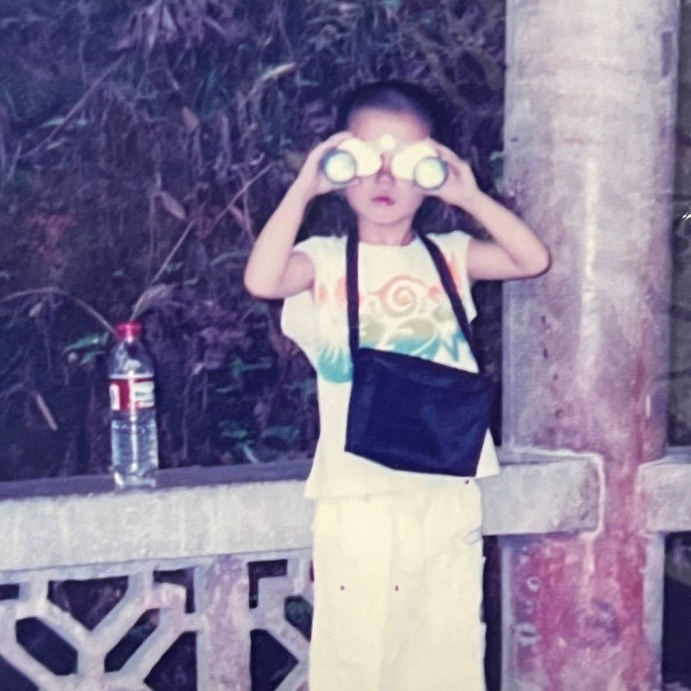

刘新煜
AI 产品经理
教育背景
中南大学（保研）| 硕士 | 设计学
2024.09 – 2027.06
校园经历：担任导师组设计实验室主理人，组织筹办读书会、论文分享会等活动。
所获荣誉：2025年获得中南大学校级二等奖学金，2024年获得研究生学业奖学金，2024年获得香港当代设计奖。
同济大学 | 本科 | 工业设计
2019.09 – 2024.06
校园经历：担任班级学习委员、同济大学红十字会分部门组长、同济大学学生会分部门组长；负责班级日常管理，校园活动筹划，组织参与过疫苗接种、献血、校女生节等大型活动。
所获荣誉：2022、2023年获得同济大学校级三等奖学金，2019年获得新生院优秀班干部。
实习经历
字节跳动 | 飞书多维表格 (Lark Base AI) | AI 产品经理
2025.09 – 2026.02
-
▶
侧边栏AI 意图分流智能体 (Decision Agent) 项目
▸ 背景&目标：多维表格侧边栏AI集成多个Domain Agent，需要构建高准确率的意图分流机制，实现用户Query的快速识别与智能路由，降低系统耦合度并支撑持续迭代。
▸ 职责&成果：负责Decision Agent的全部评测与优化工作。评测分数由72分提高到了96分（+33%）；评测效率由3人天提升至自动化3小时；实现支持新Domain Agent的快速接入与敏捷迭代。
· 搭建自动化评测体系：构建1200+条高质量评测集与Ground Truth，针对Decision Agent“仅验证分流正确性”的特点设计自动化评测流程；AI Coding开发评测解析、评分与归因系统，实现Badcase自动分类与问题定位。
· 推动Agent架构策略优化：识别Decision Agent功能过载问题，将领域相关Query下沉至Domain Agent处理，通过策略调整完成能力解耦，降低分流复杂度并提升系统可扩展性。
· 优化提示词：梳理飞书多维表格结构化知识并注入提示词；推动在提示词中引入当前环境上下文信息，提升理解能力；维护海内外10+提示词版本；设计跨提示词与SOTA模型对比实验，基于实验结果中的Badcase定向调整优化策略。
曙光天玑 | 舆情智能体事业部 | AI 产品经理
2025.05 – 2025.08
-
▶
SMB端 魔方舆情报告智能体 项目
▸ 背景&目标：面向SMB用户打造轻量化舆情SaaS产品，整合舆情问答与自动出报能力，重构原有复杂系统以提升易用性与分析效率。
▸ 职责&成果：负责魔方智能体从0到1全流程的设计与跟进，期间不断进行测试优化，1个月推动MVP产品上线。
· 具体任务：设计交互式舆情报告生成流程，支持关键词优化、噪音过滤与任务调整，提升分析可控性；基于竞品分析整合30+数据字段，设计多源数据导入与分析模块；通过结构化 Prompt 与关键词逻辑优化检索策略，提升意图识别与信息召回准确率。
-
▶
B/G端 智报星舆情监测智能体 项目
▸ 背景&目标：重构传统舆情监测系统，将核心功能模块（舆情问答/舆情推荐/人物舆情）拆分为独立Agent。
▸ 职责&成果：负责舆情问答智能体的图搜优化和人物舆情智能体的人物报告功能。
· 具体任务：设计高相似度图片检索与二次搜索策略，提高信息溯源能力；设计人物舆情报告功能框架，构建多个核心维度。
个人技能与评价
产品思维
- ▹ 熟悉产品从规划到上线的全流程
- ▹ 掌握需求收集、竞品分析、需求设计、项目验收等流程
AI 思维
- ▹ 工作中善于借助 AI 发散思路，使用 AI coding 提效
- ▹ 深度体验 OpenClaw、Claude Code 等 AI 产品
专业技能
- ▹ Figma、XMind 等设计工具
- ▹ SQL、Python 等数据分析工具
- ▹ ChatGPT、Midjourney、Cursor 等 AI 工具
个人特征
- ▹ 无拖延症，擅长时间管理
- ▹ 热爱 AI 产品经理工作，愿意长期从事该岗位
- ▹ 研究生课程已全部修读完成，每周可实习 5 天
GitHub
Halo-Welt
AI Product Manager | Design & Tech